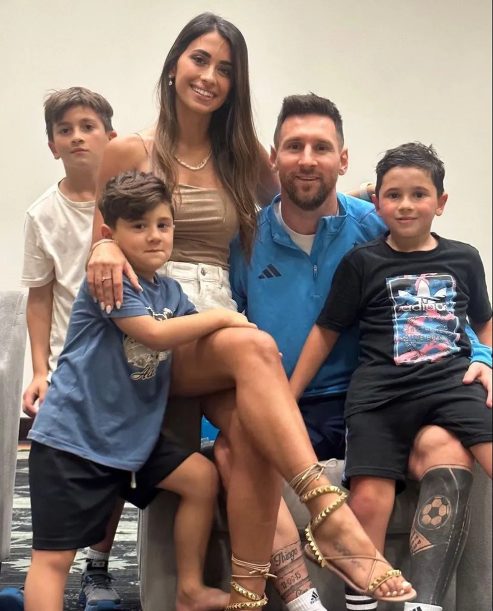

Início da Carreira
Lionel Messi começou a jogar futebol em sua cidade natal, Rosário, Argentina, quando tinha apenas cinco anos de idade. Ele se juntou à equipe juvenil do Newell's Old Boys, um clube local, e rapidamente se destacou por suas habilidades excepcionais com a bola.
Em 2000, quando Messi tinha 13 anos, ele foi diagnosticado com uma deficiência hormonal que o impediu de crescer adequadamente. O Newell's Old Boys não conseguiu pagar o tratamento necessário e Messi foi para a Espanha com sua família para se juntar ao Barcelona, que concordou em pagar pelas despesas médicas.
Em Barcelona, Messi continuou a impressionar com suas habilidades e rapidamente progrediu através das categorias de base do clube. Ele fez sua estreia na equipe principal do Barcelona em 2004, com apenas 17 anos, e desde então se tornou um dos melhores jogadores de futebol de todos os tempos.
História

Messi Pequeno
Vida Pessoal
Apesar do assédio que carrega por ser o melhor jogador de futebol da atualidade, Messi aparenta ser uma pessoa extremamente quieta, reservada, certas vezes tímida e bastante humilde. Ao contrário da maioria dos jogadores do seu círculo de amizades e do seu patamar de fama, sempre se mostrou distante das noitadas e das badaladas boates espanholas.
Interessado pela íntima e pouco divulgada vida pessoal de Messi, o jornalista e escritor Leonardo Faccio, conterrâneo do jogador e que também reside em Barcelona, escreveu "Messi, El chico que siempre llegaba tarde" ("Messi, o menino que sempre chegava atrasado", em espanhol), livro publicado pela editora Debate. Por incumbência de sua editora, Faccio tentou se aproximar de Messi durante muito tempo, conhecendo a personalidade do jogador. Na obra, o escritor apresenta Messi como um garoto jovem e aparentemente simples, diferente da grande maioria dos garotos de sua idade e seu poder aquisitivo, mas que ao mesmo tempo é uma pessoa complexa.[528] No total, Leonardo conseguiu apenas uma entrevista de 15 minutos com Lionel no ano de 2008, o suficiente para saber que "suas palavras limitam mais do que explicam" e, portanto, optou por se aproximar dele através de "mais de cem" pessoas do seu círculo social, dentre eles jogadores, treinadores e amigos próximos ao jogador.
“ Às vezes nos esquecemos que Leo é muito novo. Por sua personalidade, passa boa parte do dia dormindo e permanece boa parte de seu tempo conectado através de um BlackBerry, que utiliza para se comunicar com seu círculo mais íntimo de amigos. ” O livro também mostra o jogador como uma pessoa extremamente tímida, que foge da mídia e que odeia se ver jogando.
“ De fato, Leo não gosta de ver o jogo de futebol. Só gosta de jogá-lo. Cada derrota é como o fim do mundo para ele. ” Faccio lembrou também que, pelo que conheceu de Messi, uma derrota com a Seleção Argentina carrega uma carga emotiva bastante diferente do que quando ocorre um fracasso pelo clube catalão.
“ No Barcelona, existem pessoas que podem consolá-lo. Na Argentina, mais que o choro, existe frustração e impotência. Ali querem que ele tenha um papel que ele jamais assumiu. O de protagonista, de carregar a equipe nas costas ”
Premiações
- 8 Bolas de Ouro da FIFA (2009, 2010, 2011, 2012, 2015, 2019, 2021);
- 5 Chuteiras de Ouro da Europa (2010, 2012, 2013, 2017 e 2019);
- 4 Troféus The Best da FIFA (2019, 2020, 2021 e 2022);
- 7 prêmios Pichichi da Liga Espanhola (2009-10, 2011-12, 2012-13, 2016-17, 2017-18, 2018-19 e 2021-22);
- Artilheiro histórico da Liga Espanhola (526 gols em 631 jogos)
- Artilheiro histórico do Barcelona (754 gols em 943 jogos);
- 11 Títulos La Liga: (2004-05, 2005-06, 2008-09, 2009-10, 2010-11,2012-13, 2014-15, 2015-16, 2018-19, 2020-21 e 2021-22);
- 8 Copas del Rey (Copas do Rei da Espanha) (2008-09, 2011-12, 2014-15, 2015-16, 2016-17, 2017-18, 2020-21 e 2021-22);
- Supercopa de España: 2005, 2006, 2009, 2010, 2011, 2013, 2016, 2018.
- 4 UEFA Champions League (Liga dos Campeões da UEFA) (2005–2006, 2008–2009, 2010–2011, 2014–2015);
- 3 Supercopas da UEFA (2009, 2011, 2015);
- 3 Copas do Mundo de Clubes da FIFA (2009, 2011, 2015).
- Ligue 1: 2021-2022.
- Supercopa da França: 2022.
- Copa América: 2021;
- Copa das Confederações FIFA Sub-20: 2005;
- Jogos Olímpicos de Verão (Medalha de Ouro): 2008;
- Copa do Mundo FIFA de 2022;
Premiações Individuais:
Futebol Club Barcelona:
Paris Saint-Germain:
Seleção Argentina:
É importante lembrar que essa lista pode ficar desatualizada com o tempo caso Lionel Messi conquiste mais prêmios após esta data.
Atualizado em: 19/05/2023.